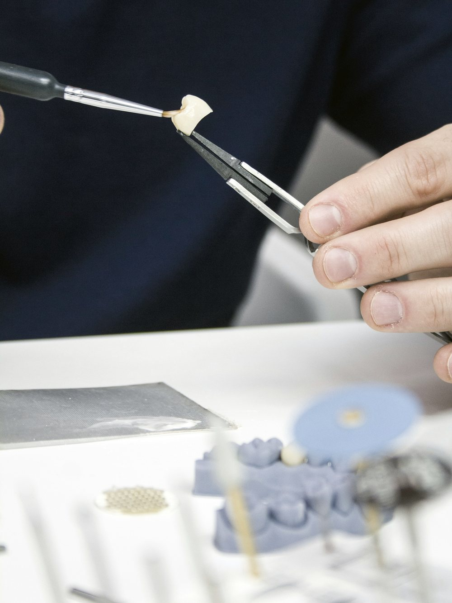

Services
Four areas of advice.
We work with laboratory owners considering a sale or a change of ownership, and with groups and investors looking to grow in the Spanish dental laboratory sector.

- 01
Sell-side advisory
ForOwners considering a full or partial sale of their laboratory.
- Analysis of the laboratory: product mix, digital capability, clinic base and technical team.
- Anonymous teaser and information memorandum.
- Selection of, and confidential approaches to, strategic and financial buyers.
- Management of offers and support in the negotiation, alongside the owner's legal and tax advisers.
- 02
Ownership transitions
ForOwners planning succession, a partial exit or the entry of a partner.
- Comparison of options: full sale, majority sale with the owner staying on, financial partner, or succession by the lab's own technicians.
- The effect of each option on the owner, the technical team and client clinics.
- Continuity of the responsible technician and the operating licence in each scenario.
- Recommendation and next-step plan.
- 03
Counterparty search
ForOwners and shareholders who want to understand their options before deciding.
- Identification of buyers and investors in Spain and across Europe.
- Assessment of their fit by region, specialism and size.
- Review of the financial information available for a process.
- 04
Buy-side advisory
ForLaboratory groups and investors looking to grow in Spain.
- Definition of search criteria: region, specialism, digital capability and size.
- Identification and preliminary assessment of laboratories.
- First contact with their owners, where appropriate.
We work in Spanish and English, including with international counterparties.
Let's discuss your situation.
A first conversation is confidential and carries no commitment.